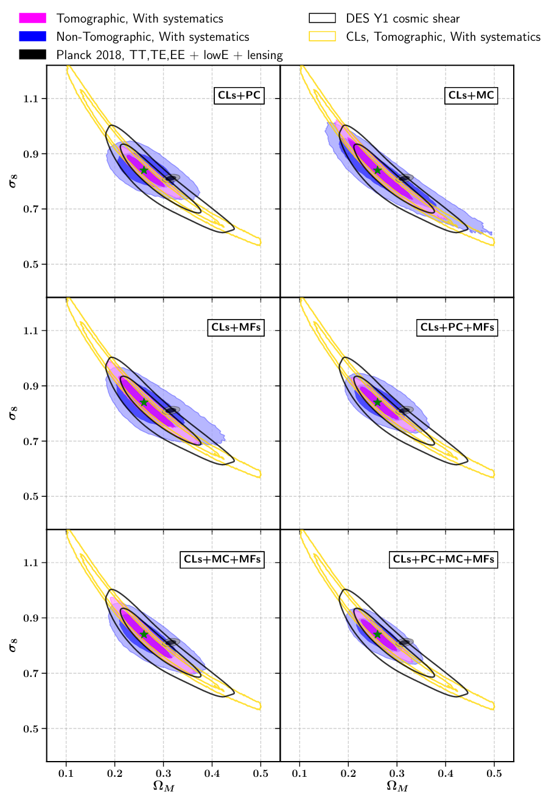
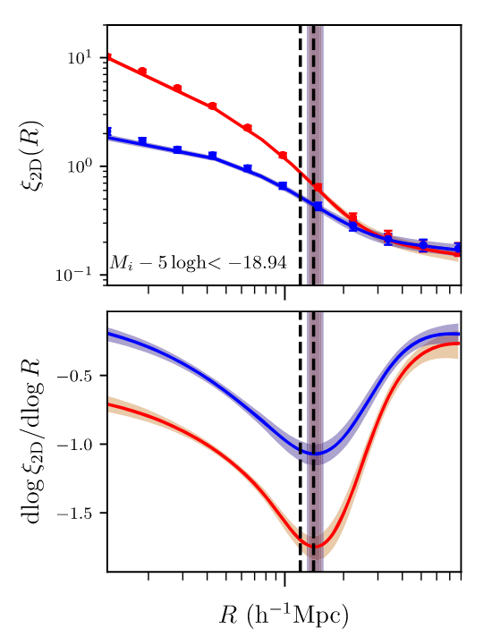
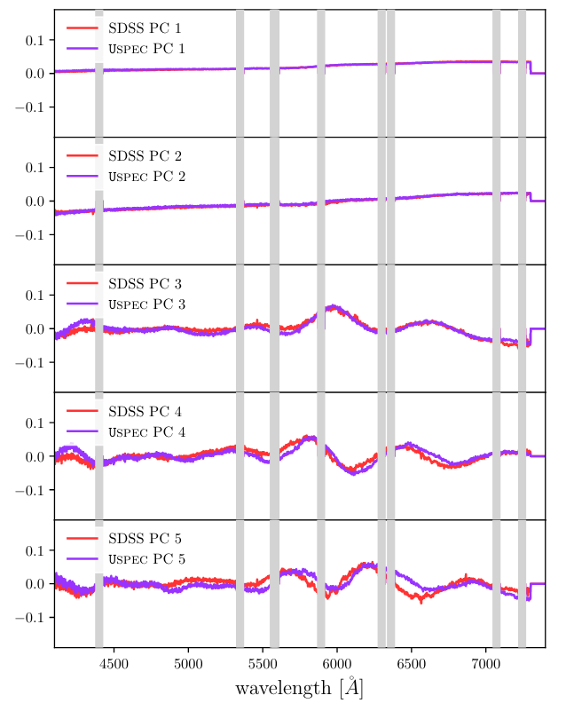

Dominik Zürcher's Personal Webpage - Research/Publications
Research / Publications
In my PhD research I am working on increasing the amount of cosmological
information that can be extracted from cosmic shear data. I study the use of higher-order
mass map statistics sensitive to non-Gaussian information of the mass maps that is complementary
to the Gaussian information commonly extracted using two-point summary statistics.
Using a forward-modelling approach I avoid the need to predict higher-order statistics from theory
for different cosmologies, which often requires to rely on approximations.
Orcid ID: 0000-0002-9240-1826
 Cosmological forecast for non-Gaussian statistics in large-scale weak lensing surveys
Cosmological forecast for non-Gaussian statistics in large-scale weak lensing surveys
Journal of Cosmology and Astroparticle Physics 2021.01 (2021): 028.
arXiv Link
Authors:
Dominik Zürcher, Janis Fluri, Raphael Sgier, Tomasz Kacprzak
and Alexandre Refregier

Abstract:
Cosmic shear data contains a large amount of cosmological information
encapsulated in the non-Gaussian features of the weak lensing mass maps.
Weak lensing studiesmostly rely on two-point statistics to constrain
cosmology from cosmic shear data, that do not capture all of this
information. Additional non-Gaussian information can be extracted
using non-Gaussian statistics. We compare the constraining power
in the Ωm–σ8 plane ofthree map-based non-Gaussian statistics with the
angular power spectrum, namely; peakcounts, minimum counts and
Minkowski functionals. We further analyze the impact of to-mography
and systematic effects originating from galaxy intrinsic alignments,
multiplicativeshear bias and photometric redshift systematics.
We forecast the performance of the statisticsfor a stage-3-like weak
lensing survey, spanning an area of 5000 deg2 and restrict ourselves
to scales ≥ 10 arcmin to avoid baryonic effects.
The study follows a forward modelling scheme to predict the statistics
at different cosmologies based on N-Body simulations. We find, that in
our setup, the considered non-Gaussian statistics provide tighter
constraints thanthe angular power spectrum. The peak counts show the
greatest potential, increasing thefigure-of-Merit (FoM) in the
Ωm–σ8plane by a factor of about 6, while the minimum counts and the
Minkowski functionals yield an increase by a factor of about 3 and 2,
respectively. A combined analysis using all non-Gaussian statistics
in addition to the power spectrum increases the FoM by a factor of 9
and reduces the error on S8 by ≈30%. We find that the importance of
tomography is diminished when combining non-Gaussian statistics with
the angular power spectrum. The non-Gaussian statistics indeed profit
less from tomography and the minimum counts and Minkowski functionals
add some robustness against galaxy intrinsic alignment in a
non-tomographic setting. We further find that a combination of the
angular power spectrum and the non-Gaussian statistics allows us to
apply conservative scale cuts in the analysis, thus helping to
minimize the impact of baryonic and relativistic effects, while
conserving the cosmological constraining power. We make the code that
was used to conduct this analysis publicly available to simplify
performing such analyses in the future.
The Splashback Radius of Planck SZ Clusters
The Astrophysical Journal 874.2 (2019): 184.
arXiv Link
Authors:
Dominik Zürcher and Surhud More

Abstract:
We present evidence for the existence of the splashback radius in galaxy
clusters selected using the Sunyaev–Zeldovich effect, a sample unaffected
by systematics related to cluster finding in the optical wavelength range.
We show that the deprojected cross-correlation of galaxy clusters found
in the Planck survey with galaxies detected photometrically in the Pan-STARRS
survey shows a sharp steepening feature (a logarithmic slope steeper than−3),
which we associate with the splashback radius. We infer the 3D splashback radius
for the SZ cluster sample to be rsp =
1.85-0.30+0.26 h-1 Mpc, where the cluster
sample has an average halo mass of M500c = 3.0 × 1014
h-1 Msol at an average
redshift of z = 0.18. The inferred value of the splashback radius appears
marginally consistent with the expected location for dark matter halos in
the standard cold dark matter paradigm. However, given the limited
precision of our measurements, we cannot conclusively confirm or rule out the
smaller splashback radius measured so far in the literature for optically
selected galaxy clusters. We show that the splashback radius does not depend
on the galaxy magnitude for galaxies fainter than Mi - 5 log(h) = -19.44
and is present at a consistent location ingalaxy populations divided by color.
The presence of the splashback radius in the star-forming galaxy population
could potentially be used to put lower limits on the quenching time scales for galaxies.
We can marginally rule outthe contamination of the star-forming galaxy sample
by quenched galaxies, but the results would need further verification with deeper data sets.
Spectro-imaging forward model of red and blue galaxies
The Astrophysical Journal 874.2 (2019): 184.
arXiv Link
Authors:
Martina Fagioli, Luca Tortorelli, Jörg Herbel,
Dominik Zürcher, Alexandre Refregier and Adam Amara

Abstract:
For the next generation of spectroscopic galaxy surveys, it is important
to forecast their performances and to accurately interpret their large data sets.
For this purpose, it is necessary to consistently simulate different populations
of galaxies, in particular Emission Line Galaxies (ELGs), less used in the past for
cosmological purposes. In this work, we further the forward modeling approach
presented in Fagioli et al. 2018, by extending thespectra simulator Uspec to model
galaxies of different kinds with improved parameters from Tortorelli et al. 2020.
Furthermore, we improve the modeling of the selection function byusing the image simulator
Ufig. We apply this to the Sloan Digital Sky Survey (SDSS), and simulate ∼157,000 multi-band images.
We pre-process and analyse them to apply cuts for target selection, and finally simulate
SDSS/BOSS DR14 galaxy spectra. We compute photometric, astrometric and spectroscopic properties
for red and blue, real and simulated galaxies, finding very good agreement.
We compare the statistical properties of the samples by decomposing them with Principal Component Analysis (PCA).
We find very good agree-ment for red galaxies and a good, but less pronounced one, for blue galaxies,
as expected given the known difficulty of simulating those. Finally, we derive stellar
population properties, mass-to-light ratios, ages and metallicities,
for all samples, finding again very good agreement. This shows how this method can be used
not only to forecast cosmology surveys, but it is also able to provide insights into
studies of galaxy formation and evolution.
↑
Back to top